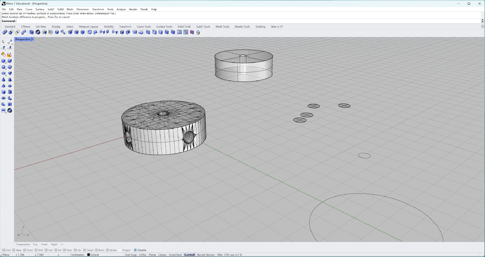
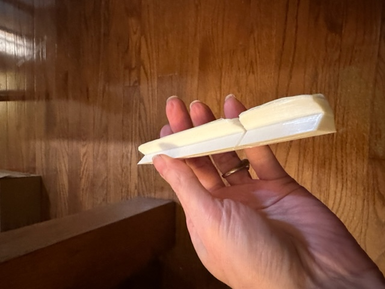

Assignment 8: My Final Project: Custom Tinkertoy Set
RECAP
Scenes from a previous final project presentation:
I decided to fabricate a set of Tinkertoys so that I could fabricate things with the Tinkertoys. Way existential.
I was feeling nostalgic for an old childhood toy. Now, I kind of never want to see it again.
These were my intended specs and items (I did not make all of them, due to things not working properly, printer shenanigans, and weather, but I did the besst I could).

Incredibly, I was able to stick with my timeline:
Here is my journey.
FABRICATION PHASE ONE
In this phase, I mostly focused on drafting my components while my materials arrived at my doorstep for later fabrication work. I used Rhino and Grasshopper for this work. This was tricky. I also began printing pieces while drafting.
While Tinkertoys look simple, the holes in all of the components must be the right size to fit the ends of the sticks (the sticks have slits sawed into their ends for tension ease) and this, in some cases, took many tries and attempts.
SPOOLS:
Here are iterations of the spool, pulley, and "Part W":


These were the spools that I ended up using, though I had to try sizing differently in Cura, leading to a few differently-sized spools in my set.
In this attempt, I made "fitters" to go into the center of a spool I found designed on Printables.com, as the hold was too big for my design. It didn't work.
PULLEYS AND BIG STACK:
Like with the spools, these took experimenting with sizes. Luckily, I had my dowels (to become the sticks once sawn and painted), so if, at the beginning of a print, I could tell the middle hole was too small, I could abort the print and adjust.

This was my first try at a pulley, and was based on a design I found by Uck on Thingiverse (15983). I learned from this and then made my own, which inspired the "big stack."
I needed to adjust the Big Stack later for a better fit. It isn't a handy piece, when I build things, I have to focus on counterbalancing it, as it's heavy. This was definitely made for a light wood.
PIECE "W"
Piece W is a spool, but it only has holes in the sides at the 90 degree angles. I just added the holes to a pulley. I made two, and while they work, they are a lot larger than my spools. This is nice, as they make good bases.

WHEELS, END CAPS, CORNERS, COUPLINGS, AND BLADES
Every set of Tinkertoy has its accessories, and I aimed to make mine have all the trimmings. This proved to create more difficulties than I intended. First, many of these items are small, and my crippled printer wasn't handling small prints well.
Second, these, no matter whether I designed them myself or used designs I found online, fitting them to the sticks was very difficult, as sizing from Rhino/GH to Cura to printer isn't always very exact. Many attempts were made.
The corner design was by jad889nb on Thingiverse, though I sized and resized it. It still isn't perfect.
Even though I had help on the design for the couplings from tcp491016 on Thingiverse, this was difficult to print on my sad, shabby printer. Even though I had just repaired the heat bed (see 'Repairs'), no matter whether I printer these upright or on their side, they kept turning to ramen. Low heat finally gave me a few.
I designed these myself, I tried sp;iralizing them (too fragile) and then printing them as normal caps. This took so many tries, I nearly gave up, and went hunting through the house searching for things with end caps I could steal. I only found one.
I found the wheel design by MakerBlock on Thingiverse, but had to design adjustments for the wheels to fit the sticks. Somehow, I lost track of measurements, and my wheels are tiny, and the holes are huge. Still, they can be used.
I originally designed my fan blades in Ai, because they were to be laser cut. However, the weekend I was planning to cut them, reports from the 8 and the MILL didn't sound promising, my driveway was snowy and icy, and though I got a reservation on the laser cutter at the Bellevue Library, they closed due to a pipe burst. So I printed them.
The print was so thin and weak that I painted the blades with 2 coats of clear nail polish to give them strength without crumpling them (I feared the XTC-3D would do that).
I made the crank wheel by moving the hold in the center of the pulley to the bottom. A short stick can be put in and a crank is born.
FABRICATION PHASE TWO
MOLDING AND CASTING
I had every intention of casting half of the spools for my Tinkertoy set. The universe, however, had other ideas.
I drafted a traditional mold to print, and that worked out well.
Everything seemed to be going along swimmingly. The next morning, I peeled off my OOMOO molds.
I got out the hydrostone, mixed it with some color powder (which didn't show any color, but that was the least of my worries). My mold was too shallow, and inside out. The result was not usable as a spool. I decided to cast a resin mold instead.
I had a started kit for resin molding. I did not realize it only came with enough resin for one mold, but what the heck.

Once I had my OOMOO mold, I pours a bit of resin in at a time and then with tweezers, put in gold and silver glitter, so I'd have, in the end, a clear spool with glitter in it. I used a small UV light to cure the resin.
The resin was suposed to cure in 1-2 hours. Mine did not. If you see me in spring quarter, ask me if it has cured yet, because it is showing no signs of curing anytime soon, which is sad. I was looking forward to my glittery spool. I have two failed casts, but you can't say I didn't try.
THE STICKS
I started with a bag of .25 inch, plain dowels as my sticks. I would need to saw them into their proper lengths, saw slits in each end, and finally paint them in bright colors. This ended up being more work than I'd anticipated.
First, I needed a mitre box in order to more easily cut the sticks with my little saw. I found a pattern for a mitre box on yeggi (designer's name unknown) and adjusted and printed it.


I notched the sticks where I'd need to saw them at the correct lengths.
Once all the sticks were at their appropriate lengths, it was time to saw notches at each end of all of them. This was the most tedious part of the project (even more so than the repairs), as the dowel jig I tried to print was what was printing when the printer broke down, so I had to do this by hand (literally).
Once I got to the little sticks, I could use a spool as a dowel jig.

Once that was done, it was time to paint - I used acrylics because they are easy to use, easy to clean, and inexpensive.
THE REPAIRS
I am used to fixing extruders. In fact, in the course of this quarter, I have gone through 4 extruders, and have re-used parts to cobble together entirely new extruders. I have learned that I have the uncanny strength to break a nozzle while installing to removing it, leaving parts of it in the thermistor block or in a ratchet set.
However, during this project, I learned to replace the y-plate and thermal heat bed, and install a new bed when the heating source to my bed plate died. THAT was fun, and took up a lot of time I didn't have.
FINISHING STAGE
In the last 2-3 days before 5 December, while I was still printing a piece or two and touching up some paint here and there, exciting things happened as I started to play with my Tinkertoy set and hold photo sessions with them.
My first few constructions were pretty simple:
I call this "The Arrow."

This is "The Lollipop."
This one is called the "Lightbulb Filament."

This one is, naturally, called "The Insect."
This is a spinny thing without a name.

This is the classic Windmill, complete with hand-turning crank.
This is a rolling piece of farm equipment, of course.
This one is called "Ferris Wheel."
FINALLY...


And there you have it - a custom set of Tinkertoys.
SOURCE FILES:
ANooSpool.3dm
TToyStick.3dm
AttemptedWheel
BigStack
Corner
Couplings
DowelJig
EndCaps
FanBlades
FanBlades.ai
JodySpools
MiterBox
NewCorner
NewSpoolsfor6mm
PartW
PartWAttempt
pulley
SpoolMolds
SpoolParts
Spools
TToySpoolTypes
Wheel1
Wheel2